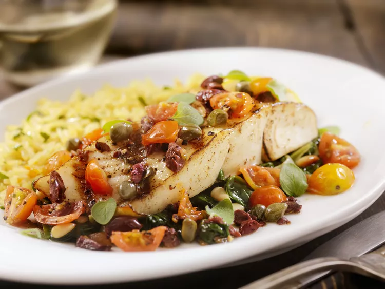

If you think the sweet and tangy combination of honey and orange is only for chicken or pork, this recipe is proof that it also works well with a mild fish such as haddock, arctic char, cod, or halibut. You can grill the fish fillets on your outdoor barbecue or under the broiler in your oven. This entrée is easy and impressive enough to serve to guests but it also makes a no-fuss weeknight dinner. Adding fresh dill or other fresh herbs gives the dish a spring-like taste, which is perfect for Lent.
Marinating the fish before grilling or broiling it is optional but it surely intensifies the flavor so if you have the time, don’t skip that step. The recipe is very versatile; you can tweak the flavorings to your liking. In place of the dill weed, use basil, thyme, or marjoram. And for a touch of French Provence, combine basil with a few crushed fennel and coriander seeds and a pinch of saffron. Plain rice is always a safe bet for fish fillets. For a side dish with more pronounced flavor, try a pilaf, either a rice pilaf or other grains, such as barley or millet pilaf.
If you have leftovers, reheat them slowly in the oven at 275 F. Fish fillets, especially without sauce, dry out quickly, which you can prevent by covering the dish with foil.